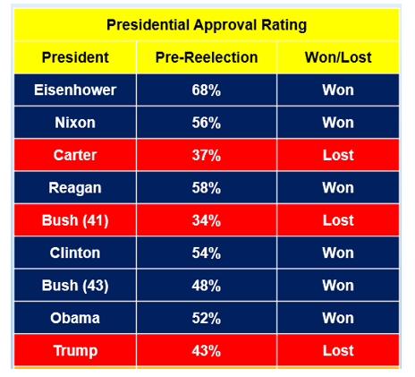
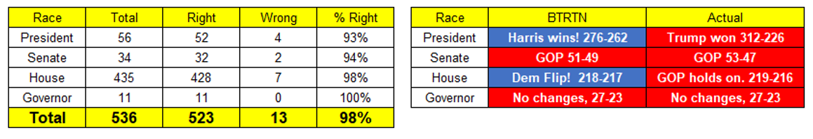
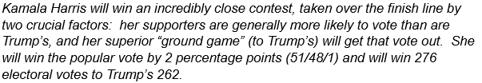
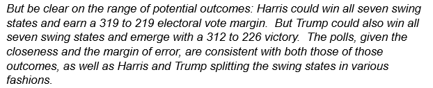
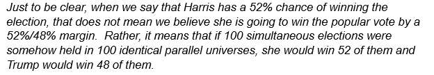
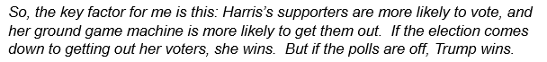
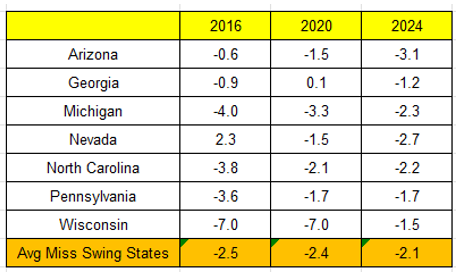
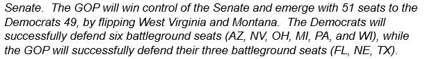
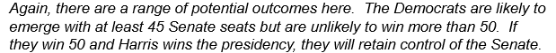
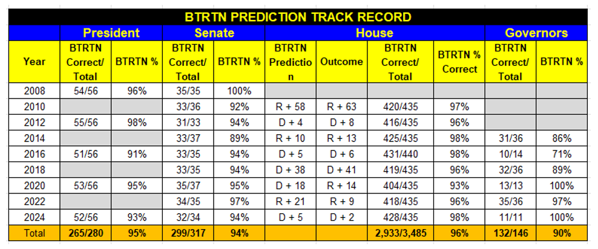

BTRTN 2024 Election Post-Mortem: No GOP Mandate, Just More Zigzagging
Tom
November 22, 2024
om is back with his post-mortem on the 2024 Election and how he did with his BTRTN predictions.
The 2024 election may never end…there are still several uncalled House races (two or three, depending on your source), each separated by just a few hundred votes, and who knows when they will be resolved. But we are rapidly approaching the end of the window for election post-mortems (and more likely already passed it), so we better get to it. I have two simple points to make, and then I’ll take a look at how we did with our BTRTN election predictions.
The Election Was Extremely Close.
There seems to be almost universal acceptance that this was a blowout GOP election. This is simply not true and nowhere near true. While the GOP did win a trifecta – as did Joe Biden and the Democrats in 2020 – control of the White House, Senate and House were all won by razor thin margins, and hardly represent the “mandate” that Trump has claimed. And that is important to understand.
There have been 16 presidential elections in my lifetime before this one, beginning with John F. Kennedy’s squeaker over Richard Nixon in 1960 through Joe Biden’s close win over Trump in 2020. Only four victors had a popular vote margin less than Trump’s 1.7 percentage point win over Kamala Harris. For reference, in the 2020 race, one generally viewed as close, Joe Biden won by 4.5 points.
The winner-take-all nature of the Electoral College can at times exaggerate presidential election outcomes, but in most of the 16 elections the winner had a wider electoral vote margin than Trump’s +86. Close elections having deceptively wide electoral vote margins is far from new. In the very close 1960 election, when JFK won the popular vote by just 0.2 points, he had 84 more electoral votes than Nixon. In another close one, Nixon’s 0.5-point win over Hubert Humphrey in 1968, Nixon’s electoral vote margin was 110. Trump may have had a solid electoral vote win over Harris, but that hardly means it was not a close race. It truly was.
Harris lost Michigan and Pennsylvania by less than two percentage points, and Wisconsin by less than a point. If she had won all three states, she would now be the President-Elect.
Said another way, if she had flipped just ~117,000 votes from Trump in those three states, just a fraction (0.0008) of the total popular vote of 154 million, she would have won. In 2020, Donald Trump needed to flip ~44,000 votes in Arizona, Georgia, Nevada and Wisconsin to win (and lord he tried). The order of magnitude is the same – both the 2020 and 2024 outcomes hinged on a proverbial handful of voters.
There is much talk of this being a “sea change” election signaling a sharp rightward movement of the electorate. You’ve doubtless seen the chart with all those little red arrows emanating from seemingly every county in the country shifting upward (from 2020 to 2024) while the blue vote ebbed commensurately. If so, it’s a pretty small sea – more like a “pond change.” If one looks at the 2020 election on a county change basis, there was a similar “sea change,” and the same with 2020 versus 2016, and 2016 versus 2012. There was no massive realignment from left to right in 2024. Rather, we are seeing the latest installment of zigzagging, as a polarized country uses outrage at the incumbent to generate enough momentum to eke out a win for four years. This disgust with the status quo convinces just enough fed-up folks to either show up to vote or switch sides.
One thing this is NOT – again – is a “mandate.” Trump will enjoy a very narrow edge in the Senate and House and will attempt to enforce his will upon them to enact as much of his agenda as he can. Nuance is not his strong suit. The environment is ripe for overreach, the most predictable political reaction of many a winner, who mistakenly assume the people will wildly approve of their every whim. Trump’s program is not well understood by his own voters, and it is extreme, and will likely be shocking to many who voted for him. Do not be surprised by a true “Blue Wave” in the 2026 midterms. Trump certainly got handed his lunch in 2018, when he lost the House, and the Democrats picked up 40 seats. That could easily happen again.
Speaking of overreach – it has already started. Trump’s nomination of Matt Gaetz to be Attorney General was a massive example of overreach, reeking of contempt for the Senate and its traditional norms. But Trump and Gaetz just backed down. May this be the first of many rejections of the underqualified bizarros Trump has put forth, and of many pushbacks to his policy proposals.
Why Did Trump Win?
There have been dozens of reasons put forward by critics who see the outcome through the lens of their own particular issue, a Rorschach test for the Big Tent party. Progressives think Harris was not progressive enough, wandering through swing states with Liz Cheney. Populists think the party has abandoned the working class for Wall Street elites. Center-lefts think wokeness was the culprit, fueled by a backlash against trans rights. Young people think it was Gaza while women say it was misogyny. Harris adherents think Biden left the race too late for her to hone her message, while Harris foes think Biden left too late for a non-Washington-based alternative candidate to emerge in an open primary. Well, at least we all agree that Biden left too late, except for some who think Harris benefited from the short window. Who said that success has many parents, but failure is an orphan? The finger pointing has been endemic.
The truth is, in a close election, all of these factors have some validity. It does not take much to influence 117,000 voters. I am a shades-of-gray type, and the right answer to a complicated question is often “all of the above.”
But I do think there is one issue that rises above the rest in explaining the Trump victory.
And that one issue is inflation.
Inflation killed the Biden presidency, and took Harris down with it. Said another way, if inflation had held at roughly 2% through the Biden Administration’s four-year run, I believe Harris would have won, perhaps even handily. I do not believe a change in any one other variable would have done the same.
Inflation is the most insidious circumstance a president can absorb on their watch because it affects everyone, right where it matters, in the pocketbook, and does so in a completely recognizable, understandable and direct manner. Prices go up, wage increases to offset them lag, and Americans see it and feel it, every week in their grocery bills and gas prices. Worst of all, even though the inflation rate can be tamed through careful management of interest rates, prices never return to their pre-inflation levels. And the cure only adds to the short-term misery, as those high interest rates are also felt by everyone in the form of mortgages and auto loans. In fact, that’s the point. Curbing demand is the one, single strategy to combat inflation — and that hurts, too.
Virtually all of the other issues of the day can have devastating consequences for some Americans – gun violence, climate change, the fate of democracy, human and civil rights, Ukraine, Gaza, abortion and yes, even other economic factors like unemployment and stock market slumps. But none have quite the reach or immediacy as inflation – not nearly.
Fully 60% of Americans live paycheck to paycheck. The inflation spike in 2022 was very real to them. They did not need to see economic reports on FOX News nor hear about it from Trump or JD Vance (many do not pay attention to the news at all). They may not have known what caused it and would not necessarily have understood or accepted esoteric causal factors such as the “global supply chain impact of Covid” or “Avian Flu” (the latter of which caused the spike in eggs prices). But they knew that once prices jumped it was even tougher to make ends meet, and they knew who to blame. And that was Joe Biden.
Just about every voter I saw being interviewed after casting a Trump vote on Election Day mentioned rising prices. And that explanation was not confined to working class, high school educated white men. Here is what Ruben Gallego, the Democratic Senator-elect from Arizona, had to say when asked by The New York Times to explain the flight to Trump by Latino men:
“Latino men feel like their job is to provide security for their family, economic security and physical security, and when that is compromised, they start looking around. What happened post-pandemic with inflation, Latino men felt that no matter what they did, they couldn’t get economic security for their families because prices were so damn high.”
That may have explained not only why so many Latino men moved to Trump, but men of all colors (and ages) and many women, too. The only thing that mattered to so many is economic security, and inflation was a direct threat to that.
Once Biden got stuck with inflation – the gum-on-the-shoe that every president dreads – he could not recover. There was no way for him to close the gap in his approval rating from an unelectable 40% to a plausibly-electable 45%+. You will recall that every president since FDR with an approval rating lower than 48% has lost their reelection bid.
Biden was in the red zone. And since Kamala Harris took great pains to align herself with her boss, there was no escaping her “culpability” in “causing” inflation (which the GOP tied to Biden’s various stimulus bills). Her action plan to address high prices, which basically consisted of attacking corporations for price gauging and implementing various tax credits, did not resonate.
It’s worth noting that the three one-term presidents prior to Biden/Harris – that is, Carter, Bush 41 and Trump, the ones with those low approval ratings in the red boxes – all faced strong economic headwinds that were broadly seen as the root cause of their downfall. Carter and Bush both faced inflation, while Trump was devoured by Covid and an ensuing sharp recession. (Nixon also faced inflation in his second term, but it was overwhelmed by Watergate, which caused his resignation.) Unlike Bush, Biden (and the Fed) was able to bring the inflation rate down and avoid recession, a neat trick, but he got absolutely no credit for it.
The irony, of course, is that Trump’s two major policy initiatives – broadscale tariffs and deportations – are themselves highly inflationary. But Trump’s gift is simple messages that resonate with “average Americans” – he talked about tariffs, deportations and, separately, inflation, incessantly — and the Democrats curse is that debunking the Trump message is a communications nightmare. Never once did Harris try to offer a soup-to-nuts review of economic performance since Obama, nor explain that inflation was a worldwide phenomenon that Biden actually managed brilliantly relative to every other western leader.
There were many forces at work in the election, and the Democrats do need to adjust their messaging across a number of issues. But no more so than on the economy. After all, it IS the economy (stupid), an expression you just may be sick of hearing but also continues to define presidential campaigning. Ignore it at your peril. Both Biden and Harris focused much of their messaging on Trump’s temperament and threat to democracy; Harris also focused on abortion, a proven off-year election winner. But high turnout presidential elections hinge more on the economy than anything else because that’s what drives the voters to the polls. The Democrats must find a way to explain their economic programs in easily understood terms to win in 2028.
And they may, of course, have help from Trump and his zeal in implementing his inflationary platform. If Matt Gaetz was an early example of overreach, there is much more to come.
How Did We Do?
The night before Election Day, we offered our BTRTN predictions on the presidential, Senate, House and gubernatorial races. How did we do? Well, the chart on the left looks pretty good – only 13 wrong calls out of 536 total races, wow! But the chart on the right looks awful. All it took was a handful of very close races going the wrong way to change the headlines. For the more nuanced explanations, read on.
The Presidential Race.
Well, we got this part wrong. And that is the main part, of course.
But to be fair, we got this part right.
And we explained exactly how close the race was and the meaning of Harris having a 52% chance of winning, as our models indicated.
And this might well have been the final determinant.
Once again, it appears that Trump overperformed the polls, and, in a replay of 2016, the amount of the polling miss, while small, was enough to flip the entire race.
The chart below shows the differences between the final polls and the actual results in the seven swing states in each of the three elections. Unlike the polling misses of 2016 and 2020, which had substantial variation across the swing states, the misses of 2024 were reasonably consistent, off by 1-3 points in each, and all were in the same direction, that is, slightly undercalling Trump.
Having said that, it is truly difficult to blame the polls when all the analysis, including ours, said the polls indicated a range of outcomes that included Trump sweeping all seven swing states.
The Senate.
We did a bit better here, in that we got the headline right, though we were off by two races. This was our call:
We were wrong on two other seats that the GOP also flipped, Ohio and Pennsylvania. Bob Casey lost Pennsylvania by a mere 0.2% and that result is subject to a recount. So, we ended up with 32 out of 34 correct, including 8 out of 10 on the truly contested races.
Once again, we did caveat the closeness of the races and the polls, and our results were within the parameters we established:
The House.
We did quite well in forecasting the individual races – only seven wrong, our best showing ever — but again missed the headline. We predicted the Democrats would gain five seats, just enough to take control of the House, but they only flipped a net of +1 (or maybe +2) and just missed.
The Governors.
We were perfect here, predicting all eleven races correctly. Not that that was particularly hard, as only two were competitive and only one was a toss-up.
Here is our all-time track record. Basically 2024 was bad on the headlines, but pretty good overall.
